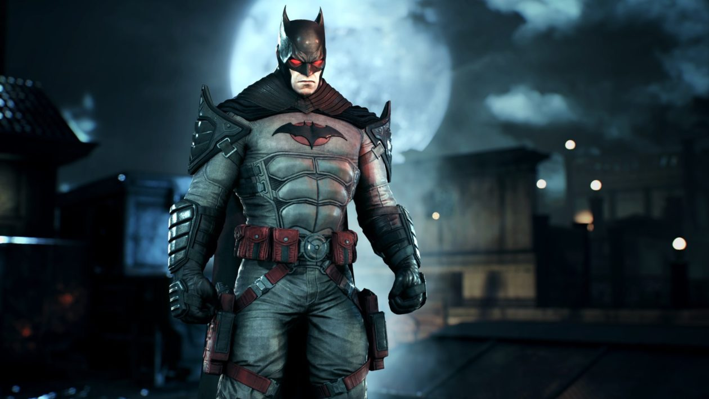

About Batman
Batman je komiksová postava, stvořená Bobem Kanem a Billem Fingerem. Postava Batmana se poprvé objevila v Detective Comics #27 (květen 1939). Od té doby se tento superhrdina vyskytuje i v dalších komiksech DC Comics. Původní Batman se nazýval pouze Bat-Man, než došlo k úpravě do dnešního názvu. Tomuto netopýřímu muži se přezdívá různě: The Caped Crusader, The Dark Knight, The Darknight Detective a The World's Greatest Detective.
Batman a jeho kamarádi
Batmanovi vlastnosti
- Má plášt
- Jeho domovinou je Gotham
- Má svůj batmobil
Batmonovi kámoši
On nemá kámoše převážně pracuje sám na sebe a zachranuje Gotham Klikni sem, aby ses dozvděl víc o něm